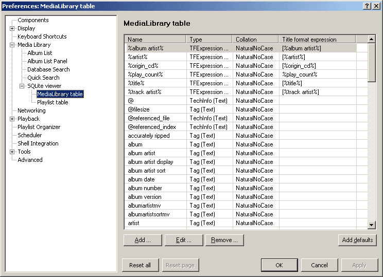

For starting with basic queries, no configuration is necessary here.

For querying the foobar2000 media library a SQLite virtual table is provided
which includes besides all available tags several other fields per default.
The fields of the virtual table can be customized in the preferences.
Similarily also a virtual table is provided for querying the playlists. The
virtual table names are: MediaLibrary and Playlist. They are implemented
with the module MetaDb_Module.